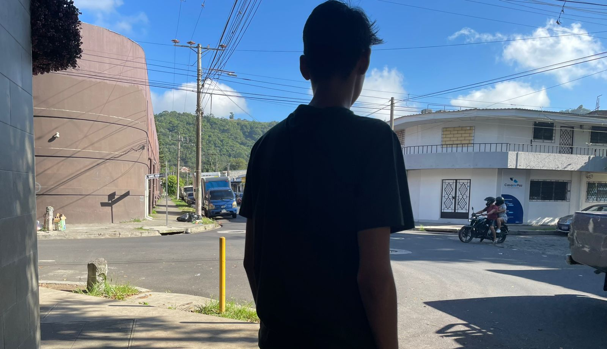
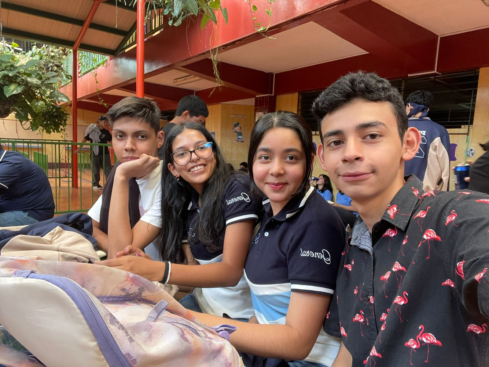
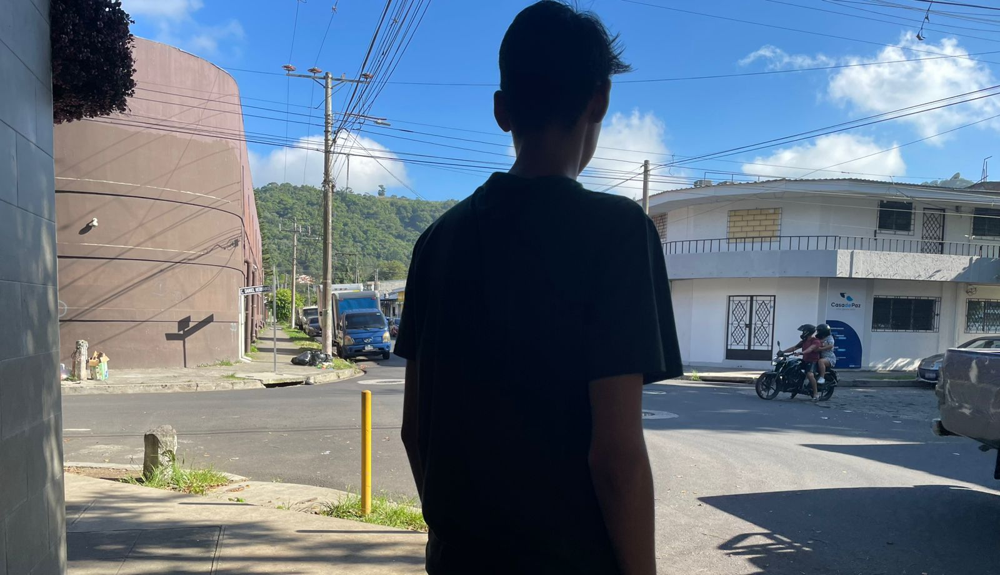
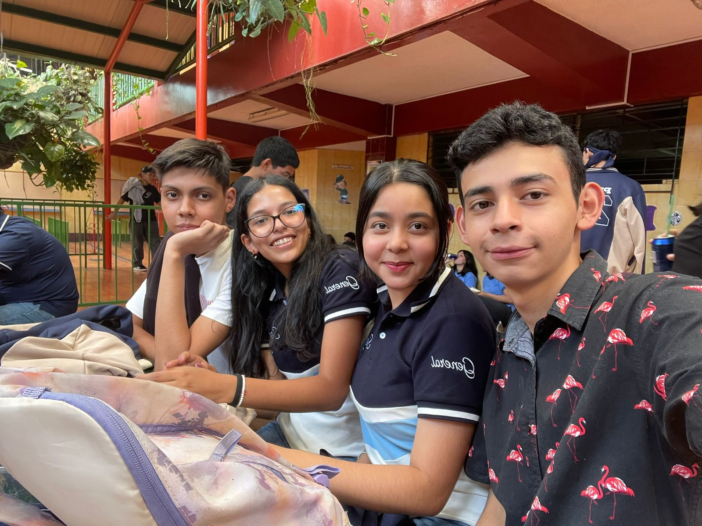

WELCOME TO MY
PERSONAL PORTAFOLIO

 



I am a 17-year-old student about to graduate from high school
and the Superate program with the desire to excel. I am a
motivated and persistent person.
Every experience I have had
has helped me to continue growing and learning, both personally
and academically. It has also allowed me to develop teamwork
skills, technological
skills, and problem-solving abilities.

I studied general high school at Instituto Nacional José Damián Villacorta, and also received a scholarship from the ¡Supérate! Fundacion Poma program. And now I am close to beginning my university studies at Don Bosco University in engineering.
Spatial reasoning, verbal fluency, adaptability, programming basics, intermediate English and knowledge of Microsoft Office apps (Excel, Word, PowerPoint, Power Apps)
Among my interests are technology, especially web development and the world of aeronautics. I like learning new things, programming, and cycling.
I hope to develop professionally as a computer science engineer, I also plan to take courses that will further specialize me in the area of technology and the English language. I believe that studying is the key to transforming my future, which is why I am committed to it.
I have taken classes in English, computer science, values, and mathematics. I have also participated in the creation of various technological projects, in addition to obtaining certifications in English and computer science.
Portfolio with the most relevant information from the last three years, including personal details, projects, certifications, courses and awards. Get in touch through this website, email or social media.